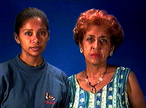

 Sandra Arocha nace el 16 de agosto de 1963 en Guatire, Estado Miranda, teniendo 7 años en el oficio.
Rosa Cordova nace el 05 de julio de 1947 en Guatire, con 5 años en el oficio.
El tipo de artesanía de ambas consiste en ensamblado de madera y muñequería, presentando aquí una linea de muebles infantiles.
Pertenecen al Movimiento de Artesanos Guatireños (ARTEGUA), con sede en la Tiendita Guariteña: Biblioteca Pública "Don Luis y Misia Virginia" en Guatire.
Han participado en exposiciones individuales en las poblaciones de Guarenas y Guatire, en la Feria de Tintorero 96, Expoartesanía 97 y Primera Feria Artesanal de Aragua.